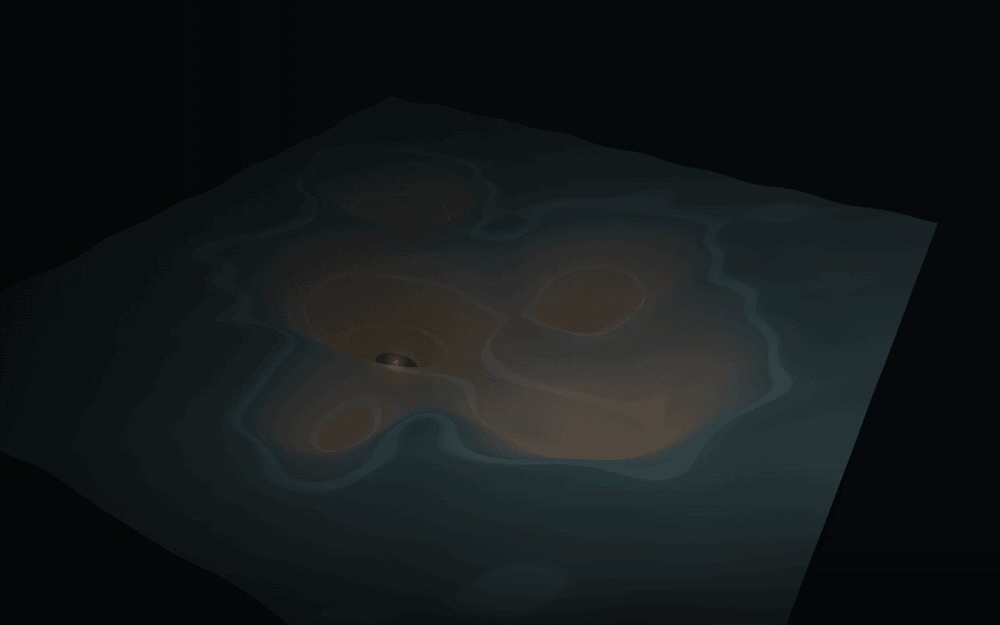
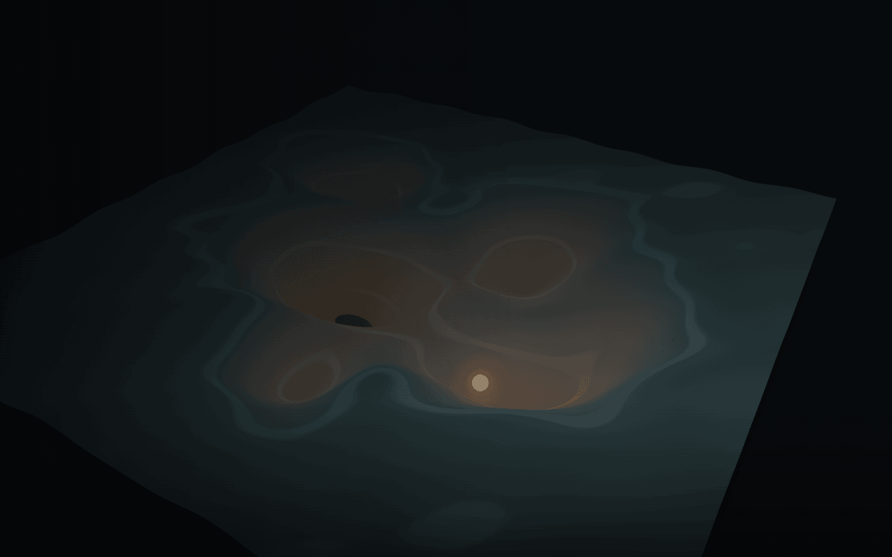
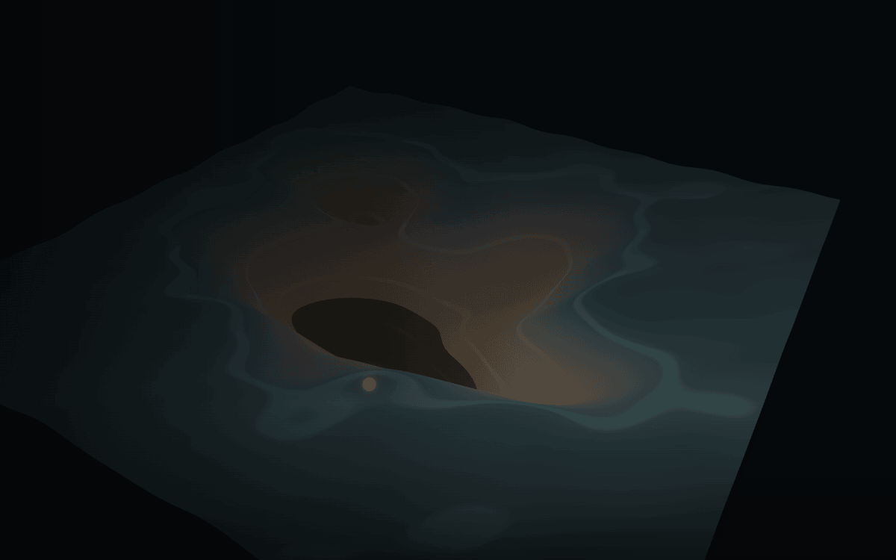

A broad question starts near broad language
“Is social media safe for teens?” drops near familiar public discussion. The words in the prompt constrain which continuations fit before generation even starts.
A topographic map of machine consensus
An AI model doesn’t have opinions. It has geometry.
Training data carves a landscape. Your prompt picks the starting point. Then one possible answer rolls downhill through what the model learned to make likely.
Drop a prompt Where this map lies →Imagine every recurring phrase, argument, association, omission, and style in the model’s training material pressed into one surface. Where many compatible continuations pile up, the terrain sinks into a basin. Where few fit, it rises into a ridge.
This is not a literal map inside the model. It is a useful compression of a harder idea: an answer is assembled from locally likely next pieces, conditioned on everything already written. The deepest region is not an average opinion and not a conclusion reached by detached reasoning. It is a region the learned system makes easy to enter and hard to leave.

Mainstream viewExpert nicheContrarianFringeInstitutional defaultLong-tail surpriseThe same learned terrain can produce different answers because the prompt places the first ball at different coordinates. Watch two phrasings of the same subject.
“Is social media safe for teens?” drops near familiar public discussion. The words in the prompt constrain which continuations fit before generation even starts.
Each generated piece changes the slope under the next one. A slight early lean can become a coherent answer because later tokens must fit the path already taken.
Now the prompt requests the strongest case against the subject. The terrain has not changed. The starting position and initial nudge have.

You didn’t change the model. You changed the coordinates.
The word bias hides three different interventions, three different responsible groups, and three different ideas of a fix. Conflating them makes every argument about AI less precise.
| Kind | What causes it | Who is accountable | What “fixing it” means | Terrain metaphor |
|---|---|---|---|---|
| Layer 1Corpus bias | Patterns and absences in the writing the model learned from. Repetition digs; silence leaves high ground. | Diffuse: authors, publishers, platforms, collectors, and the builders who choose the sampling mix. | Change the material: add missing perspectives, rebalance sources, repair errors, and accept that every corpus boundary is a choice. | Natural landscape. History deposited the layers before this model existed. |
| Layer 2Curation bias | Selection, filtering, deduplication, labeling, and exclusion decide which parts of the available corpus become training material. | Dataset builders and model developers who set the inclusion rules and apply them. | Change the selection process: expose provenance, audit criteria, test omissions, and revise filters whose side effects exceed their purpose. | Selective erosion. Some deposits remain; others are cut away before training. |
| Layer 3Alignment bias | Post-training objectives, preference judgments, rules, and product constraints reward some answer shapes and discourage others. | The actors who design the objective, supply judgments, set deployment rules, and approve the resulting behavior. | Change the earthworks: revise objectives and evaluations, inspect tradeoffs, document the intended behavior, and govern who gets to choose it. | Civil engineering. Basins are deepened, ridges raised, and channels redirected on purpose. |
Here, “RLHF” is shorthand for the broader post-training layer that steers model behavior. Toggle it and watch the validated demonstration edit three parts of the field.
More nearby paths are captured by the largest basin.
A once-reachable pocket becomes much easier to escape.
A wide, narrow route feeds toward the main region.
Morph the terrain under the resting particle. It re-settles on the new field; a particle still descending follows the interpolated slope. Post-training changes what is easy to say, not just what is blocked at the end.

Labs reshape models after training, and those edits are editorial decisions by private actors. Some are plainly useful; all create tradeoffs. The durable question is not whether shaping occurs, but who names the goal, sees the side effects, and can contest the result.
A good metaphor makes one structure visible by hiding another. Keep the terrain, but keep its warning label attached.